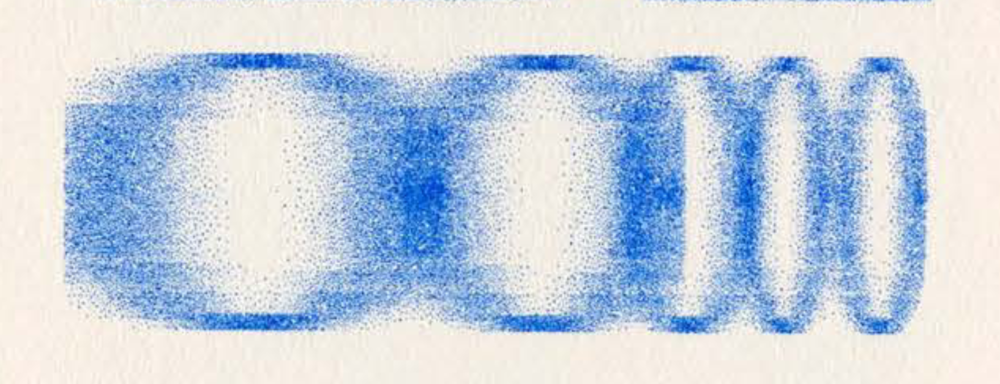
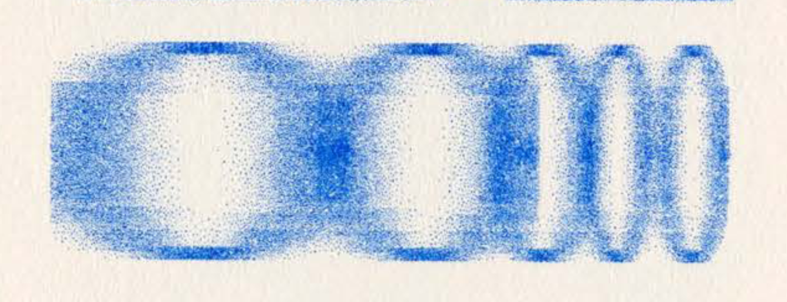

Our words, like everything else in the world, are impermanent. Spoken words vanish into the air as they are uttered, and oral stories change with each retelling. Handwritten words also bear the weight of ephemerality as ink fades, handwriting becomes messy, or the writing’s medium – paper, stone, et cetera – naturally degrades over time. This transient nature of words may seem less obvious in digital writing. Typed words appear eternal, with each letter seemingly identical to the last. However, the cyber domain, too, is not immune to decay. Computer hardwares can fail, softwares can become obsolete, and data storage can run out, leaving once-meaningful sentences lost in a sea of obsolescence. Furthermore, cultural context continuously reshapes the meanings of “words” – slangs, acronyms, and even official vocabularies, adopting and stretching them to accommodate new nuances. Afterall, digital space is an extension of the physical space, and neither can escape the marks of time and entropy.
“Stretch Marks” is a series of typographic designs that explores the materiality of digitally typed texts and their gradual degradation. The designs are a result of an interactive p5.js code where letters are stretched and thus distorted according to the duration of the key press. Additionally, as the code uses the previous iteration of that letter as the new source, each repetition of a key causes the letter to further lose resolution and clarity. The texts that result from this process have been heavily disfigured and pixelated almost to — but not quite yet at — the point of illegibility.


 


"Stretch Marks" was my final project for the "Alternative Typographic Histories" class taught by Levi Hammett and Hind Al Saad, as part of School for Poetic Computation (SFPC). The final projects from the class were curated into a zine, designed by the Levi and Hind. All the images in the zine were laser printed using blue ink on Insulation Pink French Paper. The images from this page are the scans of the riso printed version of selected "Stretch Marks" designs.
To try it out, try typing on your computer keyboard and watch the letters appear below.